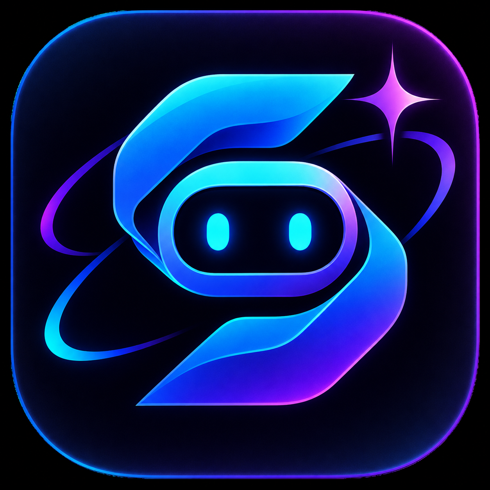

O primeiro agente autônomo com pipeline de 7 estágios: analisa dados da Meta Graph API, redige carrosséis técnicos densos, renderiza artes em 1080x1350 via Cloudflare Recraft v3 e aprende continuamente com memória RAG.
Veja na prática o conteúdo gerado, as análises de engajamento da Meta API e o cérebro de aprendizado contínuo.
Carrossel de 6 slides gerado 100% por IA com paleta dark minimalista, diagramas conceituais e legenda técnica orientada a salvamentos.
A IA diagnosticou que carrosséis técnicos com dor financeira geraram 3x mais retenção e salvamentos do que posts conceituais básicos.
Hook aprovado: Conectar impacto financeiro na primeira linha elevou a taxa de avanço para o Slide 2 para 88%.
Quando uma premissa editorial perde tração, o Syrius Agent ajusta automaticamente a matriz de pautas para os próximos ciclos.
"Vale a pena usar distroless em aplicações NestJS?"
Do insight bruto até o agendamento oficial na Meta Graph API com zero intervenção manual.
Analisa o histórico no PostgreSQL e métricas da Meta para definir o tema ideal e o objetivo de retenção.
Criação de ganchos provocativos, roteiros densos em 6 slides, legendas e hashtags via Gemini 2.5 Flash.
Gravação estruturada dos posts e slides com integridade referencial via Prisma ORM 7.
Renderização com Cloudflare AI (Recraft v3) e pós-processamento Sharp em 1080x1350 PNG.
Upload no Cloudflare R2 com geração de URLs públicas e assinadas de alta performance.
Auditoria independente por IA. Se o score for menor que 8.5, o post é refinado antes de ser aprovado.
Disparo oficial de Carrosséis e Imagens Únicas na Meta Graph API com monitoramento de status.
A combinação ideal entre velocidade de LLMs modernas, qualidade de imagem vetorial e estabilidade de infraestrutura em nuvem.
Geração com latência ultrabaixa, extração estrita de JSON e tolerância a falhas com fallback automático entre modelos Gemini.
Imagens em 1080x1350 com estética dark premium e composição vetorial de alta definição.
Armazena aprendizados empíricos vetorizados com text-embedding-004 para refinar as decisões de pautas ao longo do tempo.
Envio periódico de diagnósticos consolidados com banner em alta definição (CID Multipart) e diretrizes para o seu e-mail.
Compare a criação manual tradicional de conteúdo técnico com a velocidade da pipeline autônoma.